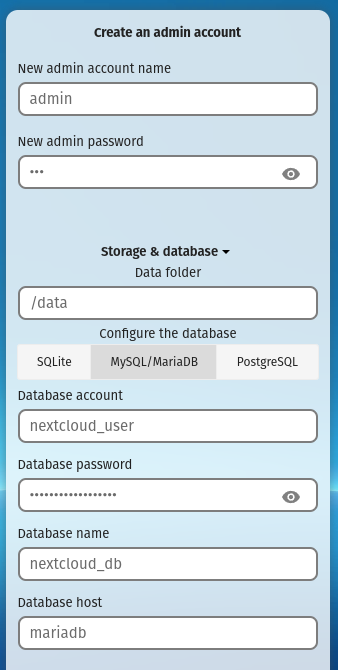

Optimizing Nextcloud
A step by step guide for setting up:
- SWAG reverse proxy via cloudflare
- Nextcloud
- Redis
- Mariadb
- Collabora
- Notify push
- Talk high performance backend
- Whiteboard
- Imaginary
- Draw.io
- Maintenance
Replace all occurences of domain.com with your domain.
SWAG
- Create a Cloudflare account and set it as the nameserver for your domain.
- Create DNS records for
domain.comand*.domain.comwith your home's WAN IP, disable the orange cloud. - Port forward
443to your server on your home router. - Add SWAG to your docker compose and start it.
swag: image: lscr.io/linuxserver/swag:latest container_name: swag cap_add: - NET_ADMIN environment: - PUID=1000 - PGID=1000 - TZ=Etc/UTC - URL=domain.com - VALIDATION=dns - SUBDOMAINS=wildcard - DNSPLUGIN=cloudflare - PROPAGATION=60 - SWAG_AUTORELOAD=true volumes: - /path/to/swag:/config ports: - 443:443 - 80:80 restart: unless-stopped - Generate a Cloudflare API token with
DNS:Read, DNS:Editpermissions todomain.comand copy the token. - Edit
/path/to/swag/dns-conf/cloudflare.ini, delete everything and paste the following with your token:dns_cloudflare_api_token = token - Rename
/path/to/swag/nginx/proxy-confs/nextcloud.subdomain.conf.sampletonextcloud.subdomain.conf. - Edit
/path/to/swag/nginx/ssl.confand uncomment HSTS and all the additional headers on the bottom. - Restart SWAG and make sure that
domain.comshows the welcome page with a valid certificate.
Nextcloud
- Add Nextcloud, Mariadb, and Redis to your docker compose and start them.
nextcloud: image: lscr.io/linuxserver/nextcloud:latest container_name: nextcloud environment: - PUID=1000 - PGID=1000 - TZ=Etc/UTC volumes: - /path/to/nextcloud/config:/config - /path/to/nextcloud/data:/data restart: unless-stopped depends_on: - mariadb mariadb: image: lscr.io/linuxserver/mariadb:latest container_name: mariadb environment: - PUID=1000 - PGID=1000 - TZ=Etc/UTC - MYSQL_ROOT_PASSWORD=nextcloud_root_password - MYSQL_DATABASE=nextcloud_db - MYSQL_USER=nextcloud_user - MYSQL_PASSWORD=nextcloud_password volumes: - /path/to/mariadb:/config restart: unless-stopped redis: image: redis:alpine container_name: redis restart: unless-stopped - Navigate to
https://nextcloud.domain.comand fill out the details for Nextcloud and Mariadb.
- Select recommended apps to install.
- Run the following commands.
docker exec nextcloud occ app:disable richdocumentscode docker exec nextcloud occ maintenance:repair --include-expensive docker exec nextcloud occ db:add-missing-indices docker exec -u abc nextcloud mkdir -p /config/log/nextcloud docker exec nextcloud occ config:system:set overwrite.cli.url --value='https://nextcloud.domain.com' docker exec nextcloud occ config:system:set memcache.local --value='\\OC\\Memcache\\APCu' docker exec nextcloud occ config:system:set memcache.locking --value='\\OC\\Memcache\\Redis' docker exec nextcloud occ config:system:set memcache.distributed --value='\\OC\\Memcache\\Redis' docker exec nextcloud occ config:system:set logfile --value='/config/log/nextcloud/nextcloud.log' docker exec nextcloud occ config:system:set trusted_proxies 0 --value='172.16.0.0/12' docker exec nextcloud occ config:system:set trusted_proxies 1 --value='127.0.0.1' docker exec nextcloud occ config:system:set trusted_proxies 2 --value='::1' docker exec nextcloud occ config:system:set redis host --value='redis' docker exec nextcloud occ config:system:set redis port --value=6379 --type=integer docker exec nextcloud occ config:system:set loglevel --value=2 --type=integer docker exec nextcloud occ config:system:set log_rotate_size --value=10485760 --type=integer docker exec nextcloud occ config:system:set maintenance_window_start --value=1 --type=integer docker exec nextcloud occ config:system:set filesystem_check_changes --value=1 --type=integer docker exec nextcloud occ config:system:set filelocking.enabled --value=true --type=boolean - Add the following to
/path/to/nextcloud/config/php/www2.conf.pm = dynamic pm.max_children = 120 pm.start_servers = 12 pm.min_spare_servers = 6 pm.max_spare_servers = 18 - Restart Nextcloud to apply the changes.
Collabora
- Add Collabora to your docker compose and start it.
collabora: image: collabora/code container_name: collabora environment: - DONT_GEN_SSL_CERT=1 - aliasgroup1=https://nextcloud.domain.com - dictionaries=en_US - server_name=nextcloud.domain.com - extra_params=--o:security.capabilities=false --o:ssl.enable=false --o:ssl.termination=true --o:logging.level=warning --o:net.post_allow.host[0]=.+ --o:home_mode.enable=true --o:mount_jail_tree=false --o:mount_namespaces=false --o:remote_font_config.url=https://nextcloud.domain.com/apps/richdocuments/settings/fonts.json restart: unless-stopped cap_add: - SYS_CHROOT - MKNOD - Add the following locations to
/path/to/swag/nginx/proxy-confs/nextcloud.subdomain.confinside theserversection.location ^~ /browser/ { include /config/nginx/proxy.conf; include /config/nginx/resolver.conf; set $upstream_app collabora; set $upstream_port 9980; set $upstream_proto http; proxy_pass $upstream_proto://$upstream_app:$upstream_port; } location ^~ /hosting/ { include /config/nginx/proxy.conf; include /config/nginx/resolver.conf; set $upstream_app collabora; set $upstream_port 9980; set $upstream_proto http; proxy_pass $upstream_proto://$upstream_app:$upstream_port; } location ^~ /cool/ { include /config/nginx/proxy.conf; include /config/nginx/resolver.conf; set $upstream_app collabora; set $upstream_port 9980; set $upstream_proto http; proxy_pass $upstream_proto://$upstream_app:$upstream_port; } - Run the following commands.
docker exec nextcloud occ app:enable richdocuments docker exec nextcloud occ config:app:set richdocuments wopi_url --value https://nextcloud.domain.com docker exec nextcloud occ config:app:set richdocuments wopi_allowlist --value=0.0.0.0/0 docker exec nextcloud occ config:app:set richdocuments doc_format --value=ooxml - Disable Collabora's dark mode under View > Dark Mode.
Notify Push
- Add the following environment variable to Nextcloud's docker compose and recreate it.
environment: - DOCKER_MODS=linuxserver/mods:nextcloud-notify-push
Talk High Performance Backend
- Generate 3 secrets using the following command and paste them to the compose below.
openssl rand -hex 32 - Add the High Performance Backend to your docker compose and start it.
talk: image: nextcloud/aio-talk:latest container_name: talk init: true ports: - 3478:3478/tcp - 3478:3478/udp environment: - NC_DOMAIN=nextcloud.domain.com - TALK_HOST=talk.domain.com - TZ=Etc/UTC - TALK_PORT=3478 - TURN_SECRET=secret - SIGNALING_SECRET=secret - INTERNAL_SECRET=secret restart: unless-stopped - Paste the following to the bottom of
/path/to/swag/nginx/proxy-confs/nextcloud.subdomain.conf.server { listen 443 ssl; listen [::]:443 ssl; server_name talk.*; include /config/nginx/ssl.conf; client_max_body_size 0; location / { include /config/nginx/proxy.conf; include /config/nginx/resolver.conf; set $upstream_app talk; set $upstream_port 8081; set $upstream_proto http; proxy_pass $upstream_proto://$upstream_app:$upstream_port; } }
- Run the following commands using the secrets generated earlier.
docker exec nextcloud occ talk:signaling:add --verify https://talk.domain.com SIGNALING_SECRET docker exec nextcloud occ talk:stun:add talk.domain.com:3478 docker exec nextcloud occ talk:turn:add --secret TURN_SECRET turn talk.domain.com:3478 udp,tcp - Optionally port forward
3478on your router to expose it.
Whiteboard
- Generate a secret using the following command and paste it below.
openssl rand -hex 32 - Add Whiteboard to your docker compose and start it.
whiteboard: image: ghcr.io/nextcloud-releases/whiteboard:release container_name: whiteboard environment: - NEXTCLOUD_URL=https://nextcloud.domain.com - STORAGE_STRATEGY=redis - REDIS_HOST=redis - JWT_SECRET_KEY=secret restart: unless-stopped - Paste the following to the bottom of
/path/to/swag/nginx/proxy-confs/nextcloud.subdomain.conf.server { listen 443 ssl; listen [::]:443 ssl; server_name whiteboard.*; include /config/nginx/ssl.conf; client_max_body_size 0; location / { include /config/nginx/proxy.conf; include /config/nginx/resolver.conf; set $upstream_app whiteboard; set $upstream_port 3002; set $upstream_proto http; proxy_pass $upstream_proto://$upstream_app:$upstream_port; } } - Run the following commands.
docker exec nextcloud occ app:enable whiteboard docker exec nextcloud occ config:app:set whiteboard collabBackendUrl --value="https://whiteboard.domain.com" docker exec nextcloud occ config:app:set whiteboard jwt_secret_key --value="secret"
Imaginary
- Add Imaginary to your docker compose and start it.
imaginary: image: nextcloud/aio-imaginary:latest container_name: imaginary restart: unless-stopped - Run the following commands.
docker exec nextcloud occ config:system:set enable_previews --value=true --type=boolean docker exec nextcloud occ config:system:set enabledPreviewProviders 0 --value='OC\\Preview\\Imaginary' docker exec nextcloud occ config:system:set enabledPreviewProviders 1 --value='OC\\Preview\\Movie' docker exec nextcloud occ config:system:set enabledPreviewProviders 2 --value='OC\\Preview\\MP4' docker exec nextcloud occ config:system:set preview_imaginary_url --value='http://imaginary:9000'
Diagrams
- Add draw.io to your docker compose and start it.
drawio: image: jgraph/drawio:alpine container_name: drawio restart: unless-stopped - Add the following locations to
/path/to/swag/nginx/proxy-confs/nextcloud.subdomain.confinside theserversection.location ^~ /draw/ { include /config/nginx/proxy.conf; include /config/nginx/resolver.conf; set $upstream_app drawio; set $upstream_port 8080; set $upstream_proto http; proxy_pass $upstream_proto://$upstream_app:$upstream_port; } - Run the following commands.
docker exec nextcloud occ app:enable drawio docker exec nextcloud occ config:app:set drawio DrawioUrl --value="https://nextcloud.domain.com/draw"
Maintenance
- Manually pull new images and recreate the containers every few weeks.
- Check
docker logs mariadbfor upgrade instructions. - Run the following commands.
docker exec nextcloud occ maintenance:repair --include-expensive docker exec nextcloud occ db:add-missing-indices docker exec nextcloud occ app:update --all